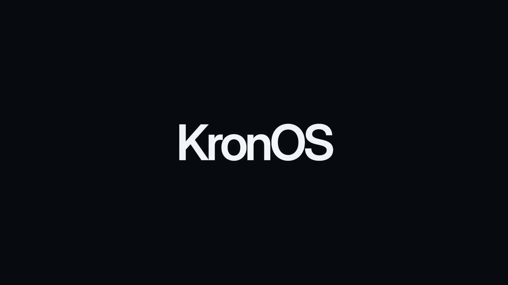

DEVICE
RELAY
LEG 01
Android
apps.
apps.
Android emulator on the canvas
01 ANDROID
02 VIRTUAL MACHINE
03 IPHONE
LEG 02
Check the
VM output.
VM output.
Chicago shortlist in the terminal
01 ANDROID
02 VIRTUAL MACHINE
03 IPHONE
LEG 03
Read on
iPhone.
iPhone.
Riverwalk article in the iPhone emulator
01 ANDROID
02 VIRTUAL MACHINE
03 IPHONE
Back on the KronOS canvas.
01 ANDROID
02 VIRTUAL MACHINE
03 IPHONE
